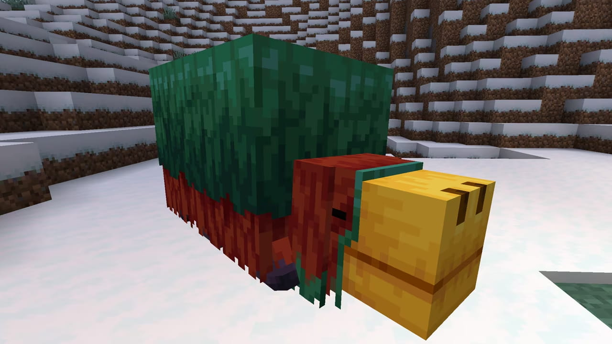
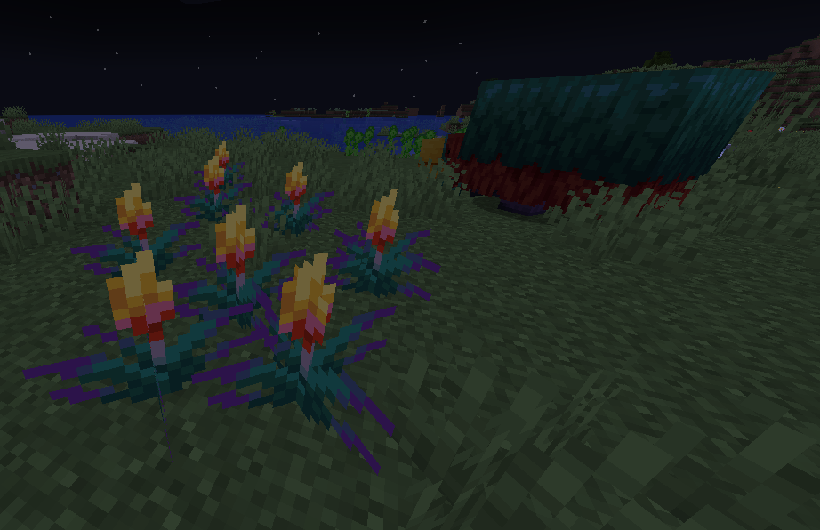
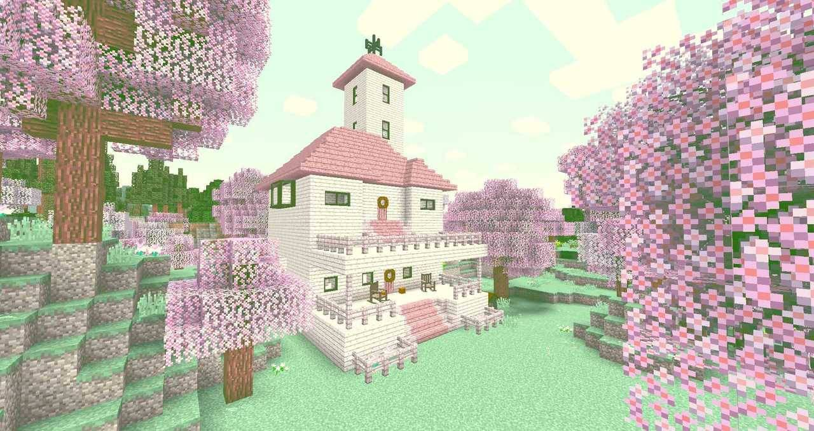
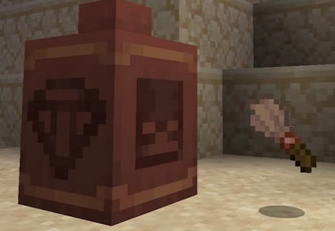

Kezdetek
A Minecraft nevű játékot Markus Persson indította útjára 2009-ben így már 14 éve és a Mojang adta ki 2011-ben vagyis 12 éve.
Játékmenet
Egy Véletleszerűe generált világba kerülünk és a célunk az Ender Dragon megtalálása és legyőzese. Nem kell szigorúan követni ezt a célt mivel azt csinálunk ebben a világban amit szeretnénk és a legyőzése után sem lesz vége a játéknak, de ezt szokták a játék végének nevezni és a Speedrunok vége is ekkor van.
Játékmódok
Túlélő
Többféle nehézség van:
Békés
Könnyű
Normál
Nehéz
Van életerőcsíkod és éhség is. A szörnyek támadnak minket (Csak Békés Mód felett). Túl kell élnünk és legyőzni az Ender Dragont
Creatív
Itt lényegében azt csinálunk amit szeretnénk. Végtelen nyersanyagunk van és minden block egy kattintásra van tőlünk. Repülhetünk és Halhatatlanok vagyunk. Ezt a módot gyönyörű építmények létrehozására szokták használni.
Hardcore
Ez hasonlít a Túlélő módhoz, de 2 fontos részben különböznek:
A nehézség véglegesen nehézre van állítva.
Ha meghalunk a világ VÉGLEGESEN eltűnik és soha nem játszatunk vele többet.
Minigamek
Modok
Legújabb frissítések
1.20
| Update |
Client Verzió |
Kiadási idő |
| 1.20 |
1.20 |
Hamarosan (2023) |
1.19
| Update |
Client Verzió |
Kiadási idő |
| The Wild Update |
1.19.4 |
Hamarosan |
| 1.19.3 |
December 7, 2022 |
| 1.19.2 |
Augusztus 5, 2022 |
| 1.19.1 |
Július 27, 2022 |
| 1.19 |
Június 7, 2022 |
1.18
| Update |
Client Verzió |
Kiadási idő |
| Caves & Cliffs: 2. rész |
1.18.2 |
Február 28 2022 |
| 1.18.1 |
December 10 2021 |
| 1.18 |
November 30 2021 |
1.17
| Update |
Client Verzió |
Kiadási idő |
| Caves & Cliffs: 1. rész |
1.17.1 |
1.17 |
| Július 6 2021 |
Június 8 2021 |
1.16
| Update |
Client Verzió |
Kiadási idő |
| Nether Update |
1.16.5 |
Január 15 2021 |
| 1.16.4 |
November 2 2020 |
| 1.16.3 |
Szeptember 10 2020 |
| 1.16.2 |
Augusztus 11 2020 |
| 1.16.1 |
Június 24 2020 |
| 1.16 |
Június 23 2020 |
1.15
| Update |
Client Verzió |
Kiadási idő |
| Buzzy Bees |
1.15.2 |
Január 21 2020 |
| 1.15.1 |
December 17 2019 |
| 1.15 |
December 10 2019 |
1.14
| Update |
Client Verzió |
Kiadási idő |
| Village & Pillage |
1.14.4 |
Július 19 2019 |
| 1.14.3 |
Június 24 2019 |
| 1.14.2 |
Május 27 2019 |
| 1.14.1 |
Május 13 2019 |
| 1.14 |
Április 23 2019 |
1.13
| Update |
Client Verzió |
Kiadási idő |
| Aquatic Update |
1.13.2 |
October 22 2018 |
| 1.13.1 |
Augusztus 22 2018 |
| 1.13 |
Július 18 2018 |
1.12
| Update |
Client Verzió |
Kiadási idő |
| World of Color Update |
1.12.2 |
Szeptember 18 2017 |
| 1.12.1 |
Augusztus 3 2017 |
| 1.12 |
Június 7 2017 |
1.11
| Update |
Client Verzió |
Kiadási idő |
| Exploration Update |
1.11.2 |
December 21 2016 |
| 1.11.1 |
December 20 2016 |
| 1.11 |
November 14 2016 |
1.10
| Update |
Client Verzió |
Kiadási idő |
| Frostburn Update |
1.10.2 |
Június 23 2016 |
| 1.10.1 |
Június 22 2016 |
| 1.10 |
Június 8 2016 |
1.9
| Update |
Client Verzió |
Kiadási idő |
| Combat Update |
1.9.4 |
Május 10 2016 |
| 1.9.3 |
| 1.9.2 |
Március 30 2016 |
| 1.9.1 |
| 1.9 |
Február 29 2016 |
1.8
| Update |
Client Verzió |
Kiadási idő |
| Bountiful Update |
1.8.9 |
December 9 2015 |
| 1.8.8 |
Július 28 2015 |
| 1.8.7 |
Június 5 2015 |
| 1.8.6 |
Május 25 2015 |
| 1.8.5 |
Május 22 2015 |
| 1.8.4 |
Április 17 2015 |
| 1.8.3 |
Február 20 2015 |
| 1.8.2 |
Február 19 2015 |
| 1.8.1 |
November 24 2014 |
| 1.8 |
Szeptember 2 2014 |
1.7
| Update |
Client Verzió |
Kiadási idő |
| The Update that Changed the World |
1.7.10 |
Június 26 2014 |
| 1.7.9 |
Április 14 2014 |
| 1.7.8 |
Április 11 2014 |
| 1.7.7 |
Április 9 2014 |
| 1.7.6 |
| 1.7.5 |
Február 20 2014 |
| 1.7.4 |
December 10 2013 |
| 1.7.2 |
Október 25 2013 |
1.6
| Update |
Client Verzió |
Kiadási idő |
| Horse Update |
1.6.4 |
Szeptember 19 2013 |
| 1.6.2 |
Július 8 2013 |
| 1.6.1 |
Július 1 2013 |
1.5
| Update |
Client Verzió |
Kiadási idő |
| Redstone Update |
1.5.2 |
Május 2 2013 |
| 1.5.1 |
Március 21 2013 |
| 1.5 |
Március 13 2013 |
1.4
| Update |
Client Verzió |
Kiadási idő |
| Pretty Scary Update |
1.4.7 |
Január 9 2013 |
| 1.4.6 |
December 20 2012 |
| 1.4.5 |
November 19 2012 |
| 1.4.4 |
November 14 2012 |
| 1.4.2 |
Október 25 2012 |
1.3
| Update |
Client Verzió |
Kiadási idő |
| 1.3 |
1.3.2 |
Augusztus 16 2012 |
| 1.3.1 |
Augusztus 1 2012 |
1.2
| Update |
Client Verzió |
Kiadási idő |
| 1.2 |
1.2.5 |
Április 4 2012 |
| 1.2.4 |
Március 22 2012 |
| 1.2.3 |
Március 2 2012 |
| 1.2.2 |
Március 2 2012 |
| 1.2.1 |
Március 1 2012 |
1.1
| Update |
Client Verzió |
Kiadási idő |
| 1.1 |
1.1 |
Január 12 2012 |
1.0
| Update |
Client Verzió |
Kiadási idő |
| Adventure Update |
1.0.1 (Csak szerver) |
November 24 2011 |
| 1.0 |
November 18 2011 |
Friss hírek
1.20 Snapshot 23W07A
Sniffer
-
A Sniffer Mob elérhető egy kísérleti funkcióként.
-
A Sniffer nyerte meg a Mob szavazást 2022-ben
-
Ő az első "Ősi" Mob.
-
Nem lehet kajával kísérteni vagy megszelidíteni.
-
Passzív barátságos Mob.
-
Sniffer-ek simatolnak a levegőben és esetenként magokért ás.

-
A Fákjavirág mostmár elérhető kisérleti funkcióként.
-
Fákjavirág magokat le lehet ültetni farmterületre és kivirágzik.
-
Két maggal lehet szaporítani két Sniffert
-
Egy teljesen fenőtt virágot le lehet aratni és úrjaültetni és még festéket is lehet belőle csinálni.

Cseresznye Erdő
-
Cseresznye erdő Biome-ot hozzáadtuk szép cseresznyefákkal.

Cseresznye fa szett
-
Új fa szett cseresznyefából

Archeológia
Kefe
-
A kefe egy új készíthető item amivel meg lehet kefélni dolgokat.

Susy homok
-
Sivatagi templomok és Sivatagi kutakan mostantól gyanús homok található. Ez a törékeny kockát nehéz kiszúrni és könnyen el lehet pusztítani, szóval légy óvatos.
-
Ha gyanús homokot kefélünk akkor tárgyakat tudunk belőle kiszedni amiket régen ástak el.
Cerépdarabok
- Cerépdarabokon képek vannak.
- Nem lehet őket elkészíteni csak Gyanús homok kefélésével lehet őket megszerezni.
<
Részletesebb leírást és a Snapshot kipróbálását itt teheted meg.
Játéktörténet (elméletben)